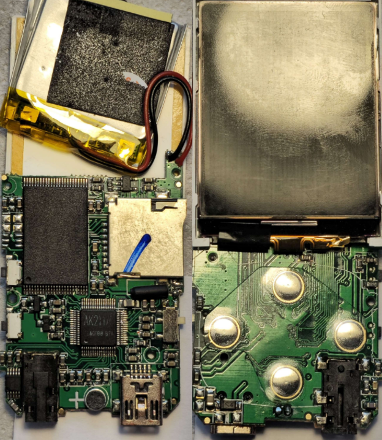
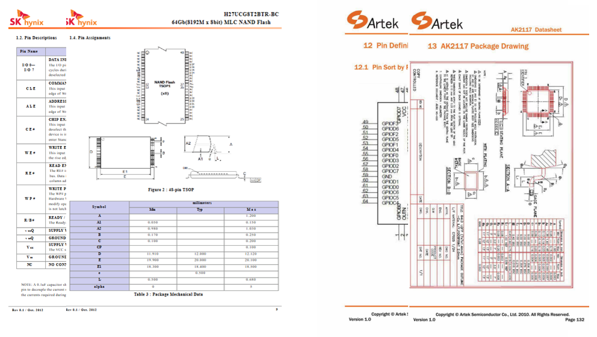
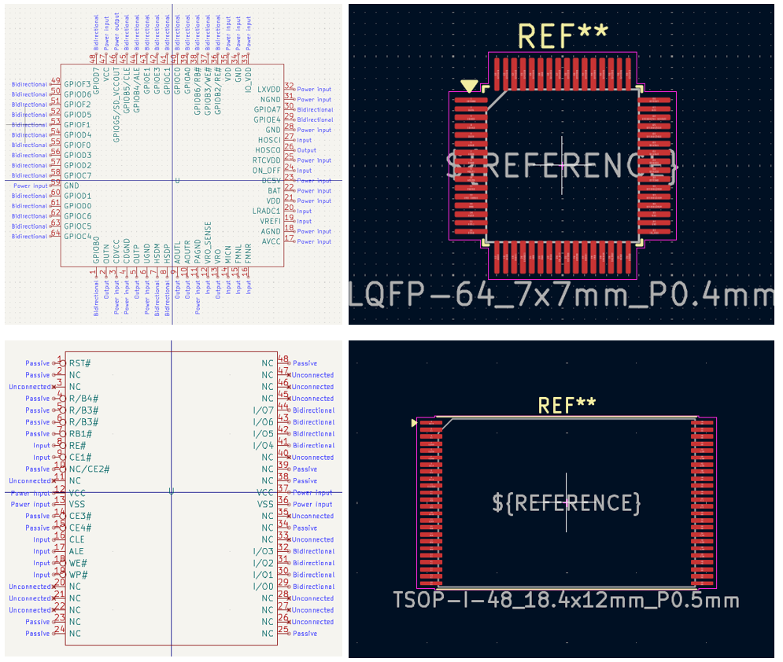
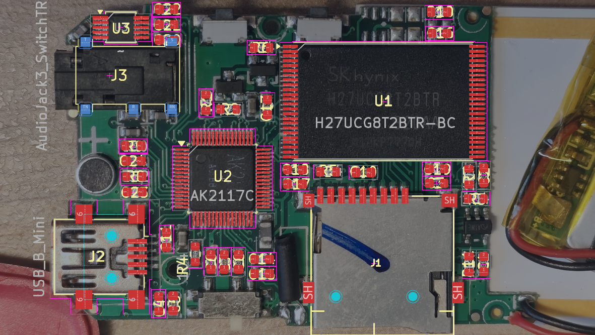
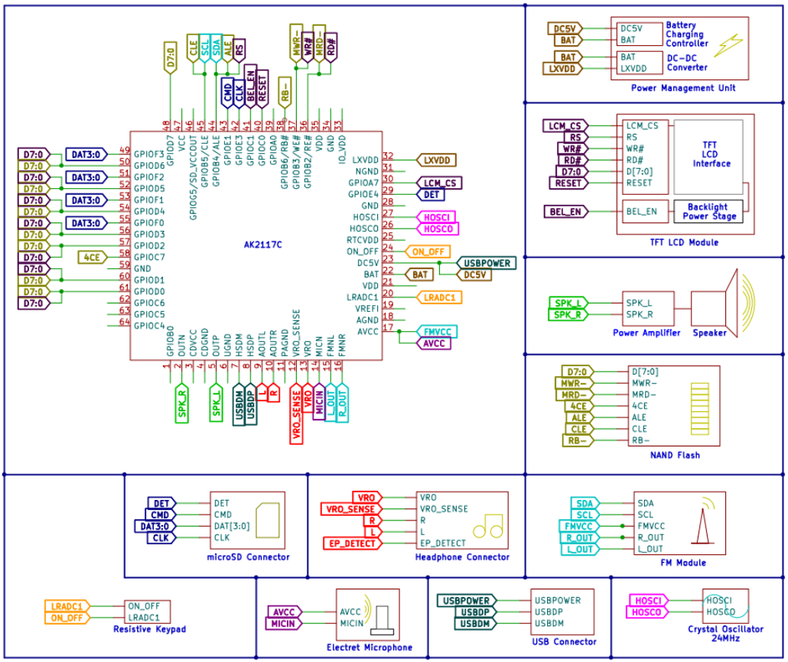
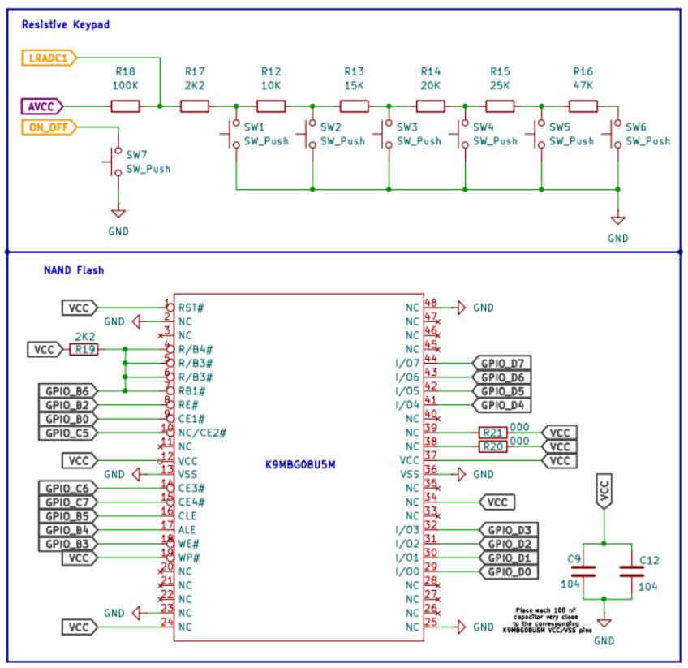
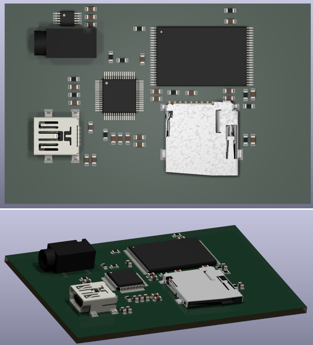

Jan. 2026 — Present · Personal reverse-engineering project
Engineering-focused reconstruction of a legacy consumer MP4 platform under limited public documentation,
combining physical teardown, CAD recreation, and iterative architecture validation.
Reverse engineer a consumer MP4 platform with scarce technical disclosure.
Reconstruct architecture and design intent across power, clocks, storage, audio, and IO.
Build an auditable technical baseline for subsequent schematic and simulation work.
Fig. 1 — Physical reference unit used as the baseline for reverse engineering.

Fig. 2 — Real PCB photography indicates routing density consistent with a likely 4-layer stack.
Physical Product Identification & PCB Teardown
Analysis anchored to the exact commercial unit, storage variant, and exposed interfaces.
Teardown and high-resolution inspection highlighted routing bottlenecks and return-path patterns.
Early layer-stack hypothesis: signal/plane/plane/signal as the most plausible topology.
Documentation Search Under Scarce-Information Constraints
Multi-source triangulation across package markings, archived technical notes, and distributor remnants.
Cross-checked partial and adjacent-family datasheets to constrain unknown blocks.
Maintained explicit confidence levels to separate confirmed data from inferred assumptions.

Fig. 3 — Documentation recovery process combining fragmented sources into a coherent evidence trail.

Fig. 4 — Custom KiCad symbols and footprints reconstructed for undocumented components and connectors.
KiCad Library Reconstruction
Created missing symbol and footprint assets for uncommon packages and proprietary connectors.
Established naming/versioning discipline to keep evidence and CAD synchronized.
Recovered enough library coverage to support end-to-end schematic and PCB recreation.
Footprint Verification & Mechanical Consistency
Executed overlay checks against calibrated high-resolution PCB photography.
Validated pitch, body size, and pin-1 orientation against available mechanical references.
Used discrepancy tracking to iteratively converge footprint fidelity before net-level reconstruction.

Fig. 5 — Overlay workflow for dimensional and positional verification of reconstructed footprints.

Fig. 6 — Iterative functional block hypothesis with confirmed versus inferred subsystems.
Functional Block Diagram
Built an architecture hypothesis partitioned into validated and provisional blocks.
Used the diagram to prioritize unknown nets and measurement campaigns.
Maintained traceability between block assumptions and physical/documentary evidence.
Early Schematic Hypotheses & Progressive Reconstruction
Drafted initial rails, decoupling, storage interface, and audio chain topologies.
Refined hypotheses as continuity work and pin mapping confirmed key nets.
Captured uncertainty explicitly to support simulation-ready revisions.

Fig. 7 — Preliminary schematic fragments showing progressive confidence-based reconstruction.

Fig. 8 — Early KiCad 3D CAD model used to validate placement logic and connector clearances.
Preliminary CAD Reconstruction (KiCad 3D)
Generated a first-pass 3D reconstruction to verify mechanical compatibility.
Checked connector alignment, keep-out behavior, and placement coherence.
Used 3D feedback to iterate footprint assumptions before detailed routing studies.
Current Status & Next Steps
Continue identifying schematic fragments and validating behavior through LTspice experiments.
Reduce uncertainty around power sequencing, analog biasing, and interface constraints.
Final objective: propose a modernized architecture with stronger power efficiency, updated interfaces, improved ESD/EMC, and clean documentation.
Personal Context
Independent project developed outside formal studies with a portfolio-oriented scope.
This page presents representative fragments only; full evidence and rationale are documented in the PDF article.
All publication decisions are guided by ethical reverse-engineering boundaries and IP responsibility.
Full Technical Article (PDF)
This page is the curated narrative. The PDF contains the complete portfolio article, methodology details, and supporting technical evidence.